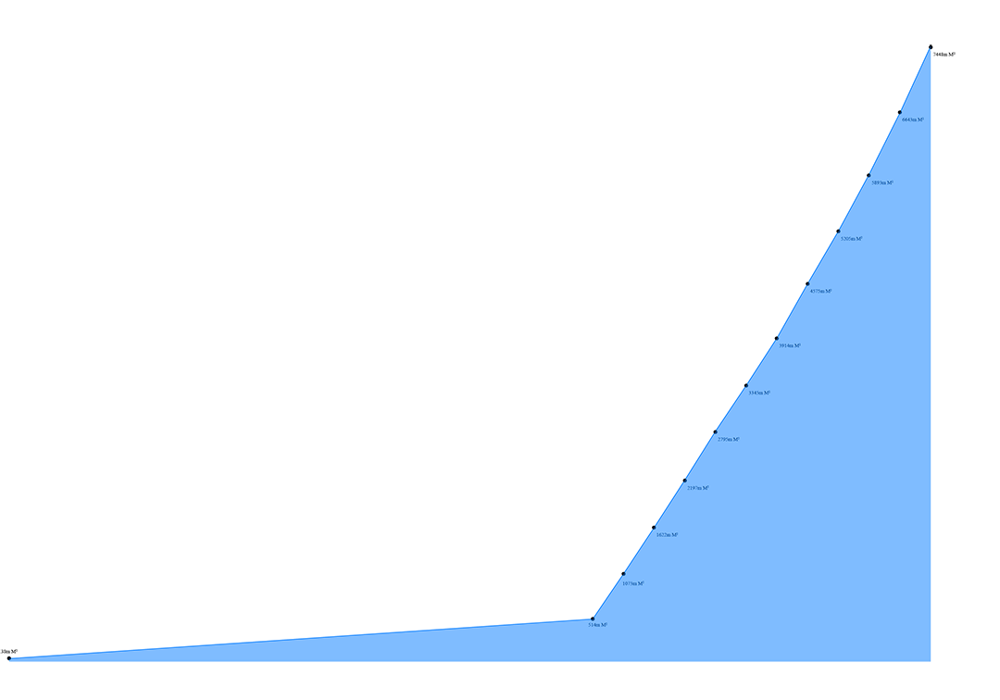
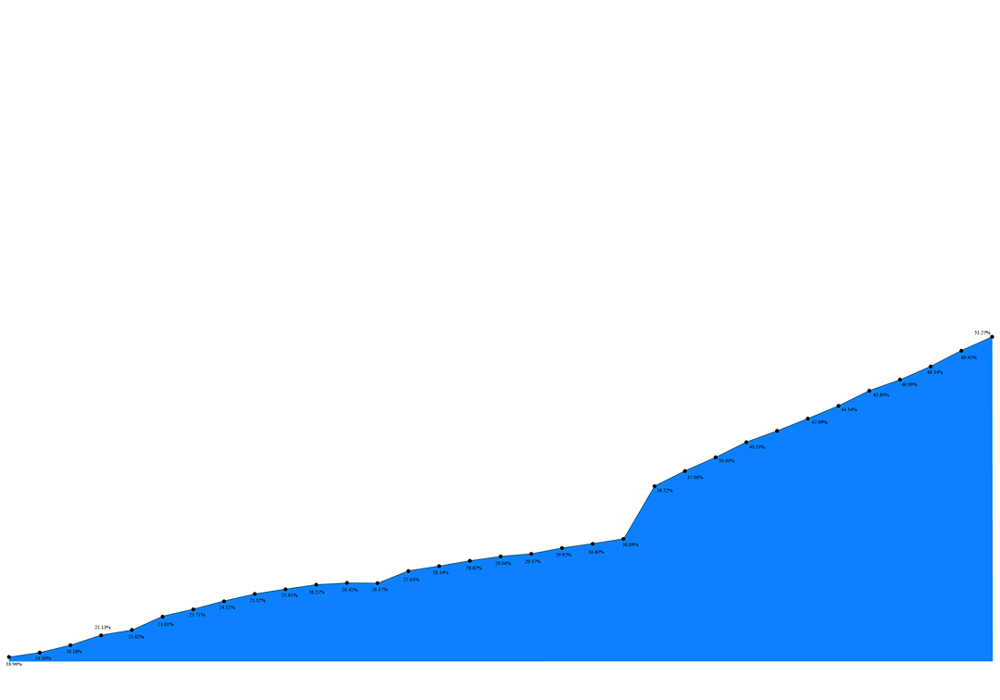
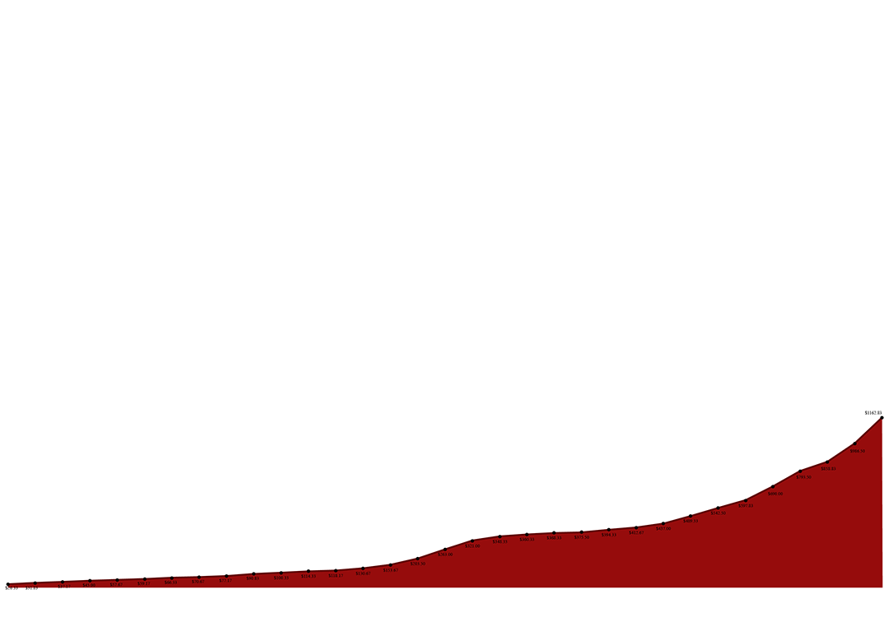
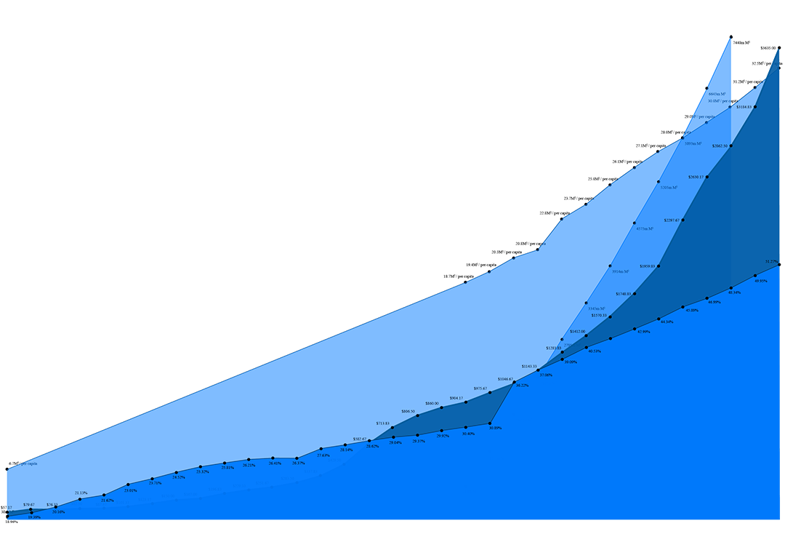
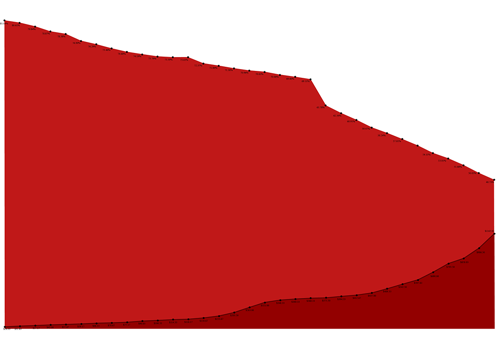
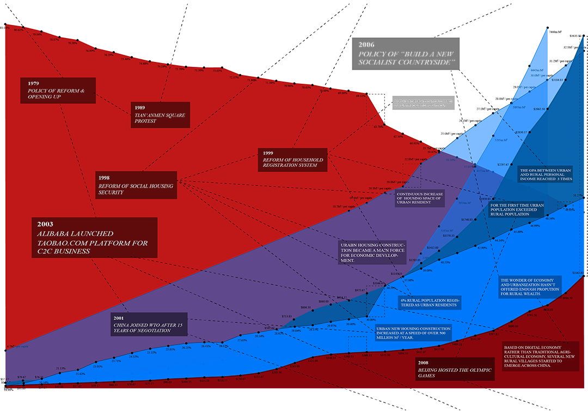
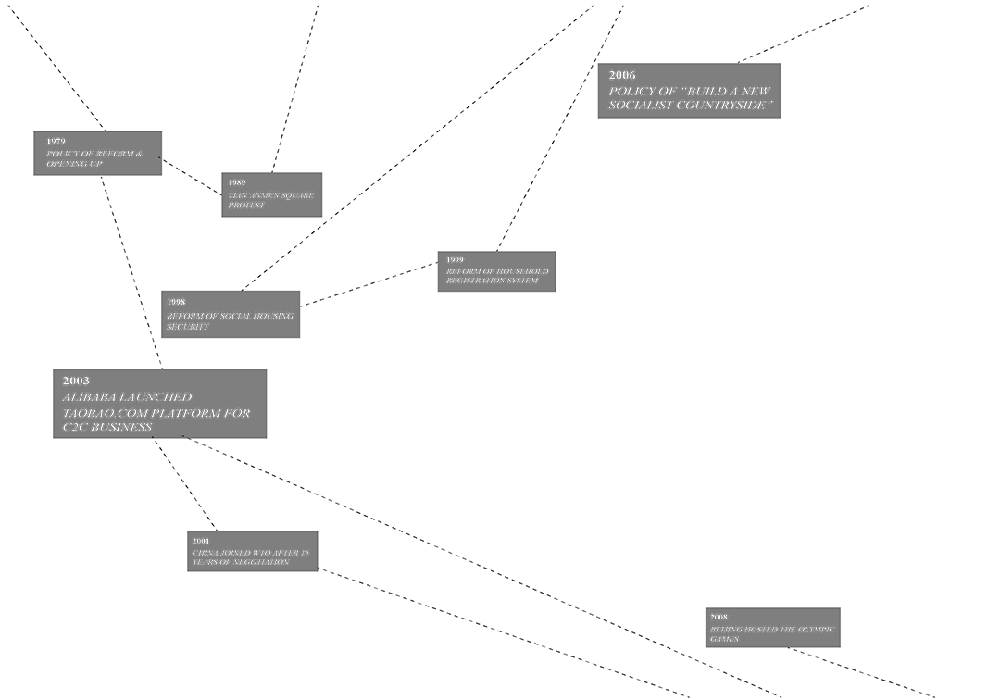
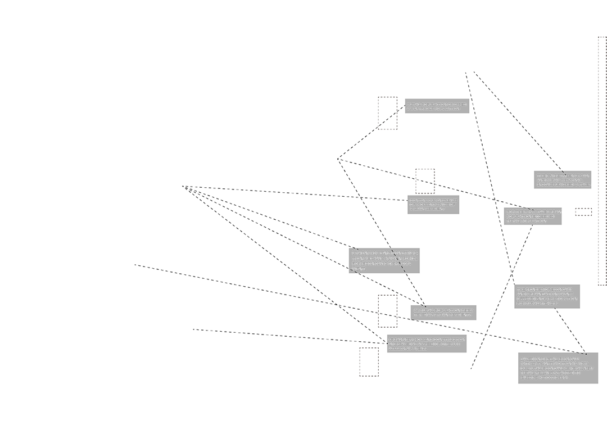

Urban v.s. Rural of China 1979-
Everyone is talking about the urbanization of China. People say this is the fastest urbanization in human history, but how fast? People say there are many rural residents having moved into cities, but how many? People say the income gap between urban and rural is becoming really big, but how big?
This ongoing project visualizes Chinese urbanization using data sets including population, income per capita, housing, etc. Together with the important policies implemented by Chinese government and changes initiated by other social entities such as Alibaba's Taobao e-commerce platform, the dry data sets become interrelated and portrays the urbanization of China in a broader and digestible perspective.
Scroll down to play with the interactive data and info layers.
Data source: National Bureau of Statistics of the People's Republic of China.
Scroll down to play with the interactive data and info layers.
Data source: National Bureau of Statistics of the People's Republic of China.
POPULATION
INCOME
HOUSING
URBAN
RURAL
POLICY&EFFECT
ALL








© 2010 - 2015 Studiowangfei | All Rights Reserved